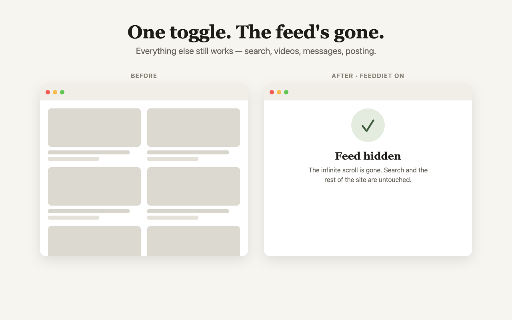
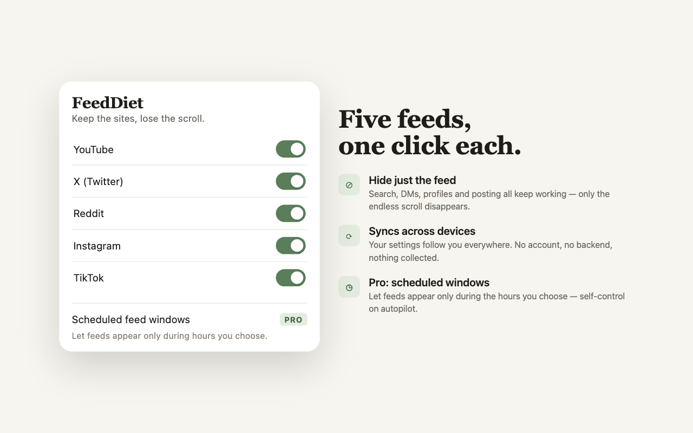

FeedDiet hides the addictive home feed on the sites you still need for real work. Search, DMs, and posting keep working. The endless scroll is gone.
Add to Chrome Launching on the Chrome Web Store. Free to install.You open YouTube for a single tutorial. Forty minutes later you are deep in recommendations you never asked for. The feed chose that, not you. FeedDiet takes the feed out of the room and leaves the rest of the site alone.
Switch the feed off where it costs you the most. Everything else on each site still works.


Hiding the feed is the free core. Pro puts it on a timer. Feeds stay gone all day and surface only during a window you set, say noon to 12:30. Self-control runs on its own after that.
FeedDiet works by hiding feed elements with CSS. It never reads your page content and it never sends anything anywhere.
Install and use it. Nothing to sign up for.
No analytics, no telemetry, no backend server.
Toggles sync across your own devices through Chrome. They never touch a third party.